15 Insights from North Carolina School Enrollment Data
Source:vignettes/enrollment_hooks.Rmd
enrollment_hooks.Rmd
library(ncschooldata)
library(dplyr)
library(tidyr)
library(ggplot2)
theme_set(theme_minimal(base_size = 14))1. North Carolina gained 118,000 students since 2006
One of America’s fastest-growing school systems.
enr <- fetch_enr_multi(c(2006, 2010, 2015, 2020, 2024), use_cache = TRUE)
statewide <- enr %>%
filter(is_state, subgroup == "total_enrollment", grade_level == "TOTAL") %>%
select(end_year, n_students)
stopifnot(nrow(statewide) > 0)
statewide
#> # A tibble: 5 × 2
#> end_year n_students
#> <dbl> <dbl>
#> 1 2006 1390168
#> 2 2010 1440212
#> 3 2015 1502009
#> 4 2020 1525592
#> 5 2024 1508194
ggplot(statewide, aes(x = end_year, y = n_students / 1e6)) +
geom_line(color = "#2171B5", linewidth = 1.2) +
geom_point(color = "#2171B5", size = 3) +
geom_text(aes(label = scales::comma(n_students)), vjust = -1, size = 3.5) +
scale_y_continuous(
labels = scales::label_number(suffix = "M"),
limits = c(1.2, 1.7)
) +
labs(
title = "North Carolina Public School Enrollment",
x = "Year",
y = "Total Students"
)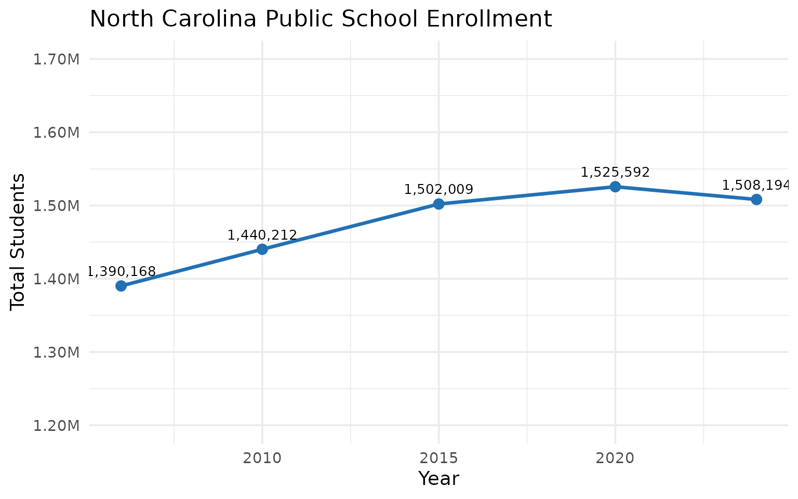
2. Wake County is the state’s largest district
The Research Triangle’s anchor district has nearly 160,000 students.
enr_2024 <- fetch_enr(2024, use_cache = TRUE)
top_districts <- enr_2024 %>%
filter(is_district, subgroup == "total_enrollment", grade_level == "TOTAL") %>%
arrange(desc(n_students)) %>%
head(10) %>%
select(district_name, n_students)
stopifnot(nrow(top_districts) > 0)
top_districts
#> # A tibble: 10 × 2
#> district_name n_students
#> <chr> <dbl>
#> 1 Wake County Schools 159675
#> 2 Charlotte-Mecklenburg Schools 140415
#> 3 Guilford County Schools 65879
#> 4 Winston Salem / Forsyth County Schools 50842
#> 5 Cumberland County Schools 47871
#> 6 Union County Public Schools 41378
#> 7 Johnston County Public Schools 36745
#> 8 Cabarrus County Schools 34919
#> 9 Durham Public Schools 30783
#> 10 Gaston County Schools 29714
top_districts %>%
mutate(district_name = reorder(district_name, n_students)) %>%
ggplot(aes(x = n_students / 1000, y = district_name)) +
geom_col(fill = "#2171B5") +
geom_text(aes(label = scales::comma(n_students)), hjust = -0.1, size = 3.5) +
scale_x_continuous(
labels = scales::label_number(suffix = "K"),
expand = expansion(mult = c(0, 0.15))
) +
labs(
title = "Top 10 North Carolina School Districts by Enrollment (2024)",
x = "Students (thousands)",
y = NULL
)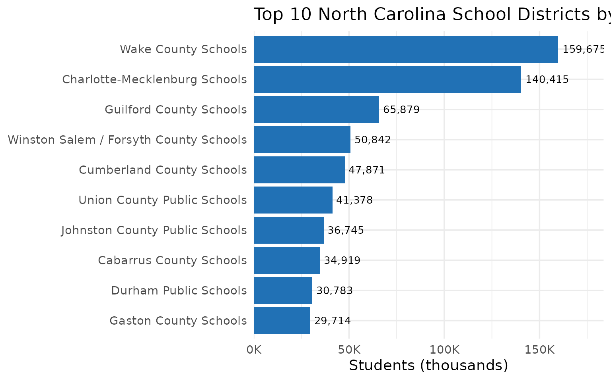
3. Hispanic enrollment surpassed Asian enrollment fivefold
North Carolina’s demographic transformation since 2018 is dramatic.
enr_demo <- fetch_enr_multi(c(2018, 2019, 2020, 2021, 2024), use_cache = TRUE)
demographics <- enr_demo %>%
filter(is_state, grade_level == "TOTAL",
subgroup %in% c("white", "black", "hispanic", "asian")) %>%
select(end_year, subgroup, n_students) %>%
mutate(subgroup = factor(subgroup,
levels = c("white", "black", "hispanic", "asian"),
labels = c("White", "Black", "Hispanic", "Asian")))
stopifnot(nrow(demographics) > 0)
demographics
#> # A tibble: 20 × 3
#> end_year subgroup n_students
#> <dbl> <fct> <dbl>
#> 1 2018 Asian 51706
#> 2 2018 Black 393618
#> 3 2018 Hispanic 271304
#> 4 2018 White 749498
#> 5 2019 Asian 54349
#> 6 2019 Black 394222
#> 7 2019 Hispanic 282328
#> 8 2019 White 746767
#> 9 2020 Asian 55582
#> 10 2020 Black 382563
#> 11 2020 Hispanic 292782
#> 12 2020 White 722929
#> 13 2021 Asian 56197
#> 14 2021 Black 373647
#> 15 2021 Hispanic 285867
#> 16 2021 White 687491
#> 17 2024 Asian 64402
#> 18 2024 Black 369522
#> 19 2024 Hispanic 328041
#> 20 2024 White 643051
ggplot(demographics, aes(x = end_year, y = n_students / 1000, color = subgroup)) +
geom_line(linewidth = 1.2) +
geom_point(size = 3) +
geom_vline(xintercept = 2020.5, linetype = "dashed", color = "gray50", alpha = 0.7) +
annotate("text", x = 2020.5, y = 780, label = "COVID", color = "gray50", hjust = -0.2, size = 3.5) +
scale_color_manual(values = c(
"White" = "#4292C6",
"Black" = "#807DBA",
"Hispanic" = "#41AB5D",
"Asian" = "#EF6548"
)) +
scale_y_continuous(labels = scales::label_number(suffix = "K")) +
labs(
title = "Demographic Shifts in NC Public Schools (2018-2024)",
x = "Year",
y = "Students (thousands)",
color = "Race/Ethnicity"
) +
theme(legend.position = "bottom")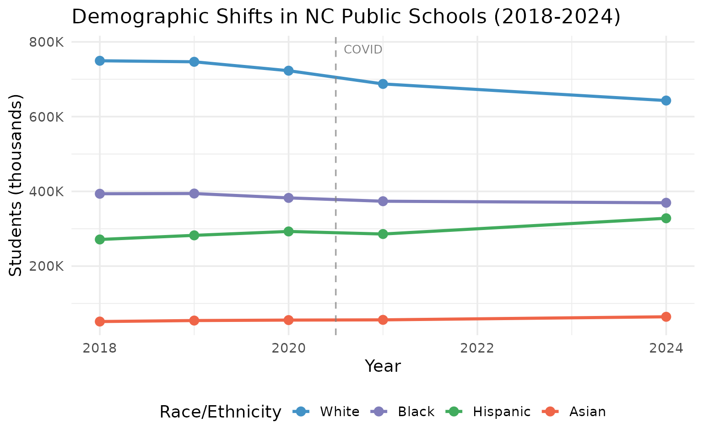
4. Charlotte-Mecklenburg lost students post-COVID
Enrollment decline hit North Carolina’s second-largest district.
cms_trend <- enr_demo %>%
filter(is_district, district_id == "600", subgroup == "total_enrollment",
grade_level == "TOTAL") %>%
select(end_year, district_name, n_students) %>%
mutate(change = n_students - lag(n_students))
stopifnot(nrow(cms_trend) > 0)
cms_trend
#> # A tibble: 5 × 4
#> end_year district_name n_students change
#> <dbl> <chr> <dbl> <dbl>
#> 1 2018 Charlotte-Mecklenburg Schools 146693 NA
#> 2 2019 Charlotte-Mecklenburg Schools 147639 946
#> 3 2020 Charlotte-Mecklenburg Schools 146255 -1384
#> 4 2021 Charlotte-Mecklenburg Schools 137578 -8677
#> 5 2024 Charlotte-Mecklenburg Schools 140415 2837
ggplot(cms_trend, aes(x = end_year, y = n_students / 1000)) +
geom_line(color = "#CB181D", linewidth = 1.2) +
geom_point(color = "#CB181D", size = 3) +
geom_vline(xintercept = 2020.5, linetype = "dashed", color = "gray50", alpha = 0.7) +
annotate("text", x = 2020.5, y = 150, label = "COVID", color = "gray50", hjust = -0.2, size = 3.5) +
geom_text(aes(label = scales::comma(n_students)), vjust = -1, size = 3.5) +
scale_y_continuous(
labels = scales::label_number(suffix = "K"),
limits = c(130, 155)
) +
labs(
title = "Charlotte-Mecklenburg Schools: Post-COVID Enrollment",
x = "Year",
y = "Students (thousands)"
)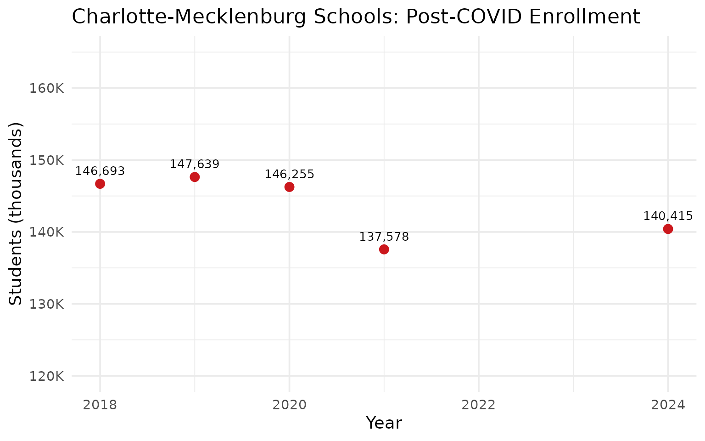
5. Charter schools serve nearly 10% of NC students
North Carolina’s 219 charter campuses enroll over 143,000 students.
charter_summary <- enr_2024 %>%
filter(is_campus, subgroup == "total_enrollment", grade_level == "TOTAL") %>%
group_by(is_charter) %>%
summarize(
n_schools = n(),
students = sum(n_students, na.rm = TRUE),
.groups = "drop"
)
state_total <- enr_2024 %>%
filter(is_state, subgroup == "total_enrollment", grade_level == "TOTAL") %>%
pull(n_students)
charter_summary <- charter_summary %>%
mutate(pct = round(students / state_total * 100, 1))
stopifnot(nrow(charter_summary) > 0)
charter_summary
#> # A tibble: 2 × 4
#> is_charter n_schools students pct
#> <lgl> <int> <dbl> <dbl>
#> 1 FALSE 2483 1364278 90.5
#> 2 TRUE 219 143916 9.5
ggplot(charter_summary, aes(x = ifelse(is_charter, "Charter", "Traditional"), y = students / 1000, fill = is_charter)) +
geom_col(width = 0.6) +
geom_text(aes(label = paste0(scales::comma(students), "\n(", pct, "%)")), vjust = -0.3, size = 4) +
scale_fill_manual(values = c("FALSE" = "#2171B5", "TRUE" = "#41AB5D"), guide = "none") +
scale_y_continuous(
labels = scales::label_number(suffix = "K"),
expand = expansion(mult = c(0, 0.2))
) +
labs(
title = "Charter vs Traditional School Enrollment (2024)",
x = NULL,
y = "Students (thousands)"
)
6. The coast is booming while the Piedmont stalls
Brunswick and New Hanover counties are growing; Greensboro-area enrollment is flat.
enr_regional <- fetch_enr_multi(c(2015, 2024), use_cache = TRUE)
coastal <- c("New Hanover", "Brunswick", "Pender")
piedmont <- c("Guilford", "Forsyth", "Alamance")
regional <- enr_regional %>%
filter(is_district, subgroup == "total_enrollment", grade_level == "TOTAL") %>%
mutate(region = case_when(
grepl(paste(coastal, collapse = "|"), district_name) ~ "Coast",
grepl(paste(piedmont, collapse = "|"), district_name) ~ "Piedmont",
TRUE ~ "Other"
)) %>%
filter(region %in% c("Coast", "Piedmont")) %>%
group_by(end_year, region) %>%
summarize(total = sum(n_students, na.rm = TRUE), .groups = "drop")
stopifnot(nrow(regional) > 0)
regional
#> # A tibble: 4 × 3
#> end_year region total
#> <dbl> <chr> <dbl>
#> 1 2015 Coast 46807
#> 2 2015 Piedmont 147754
#> 3 2024 Coast 48559
#> 4 2024 Piedmont 138801
ggplot(regional, aes(x = factor(end_year), y = total / 1000, fill = region)) +
geom_col(position = "dodge", width = 0.7) +
geom_text(
aes(label = scales::comma(total)),
position = position_dodge(width = 0.7),
vjust = -0.5,
size = 3.5
) +
scale_fill_manual(values = c("Coast" = "#41AB5D", "Piedmont" = "#EF6548")) +
scale_y_continuous(
labels = scales::label_number(suffix = "K"),
expand = expansion(mult = c(0, 0.15))
) +
labs(
title = "Coastal vs Piedmont School Enrollment",
x = "Year",
y = "Students (thousands)",
fill = "Region"
) +
theme(legend.position = "bottom")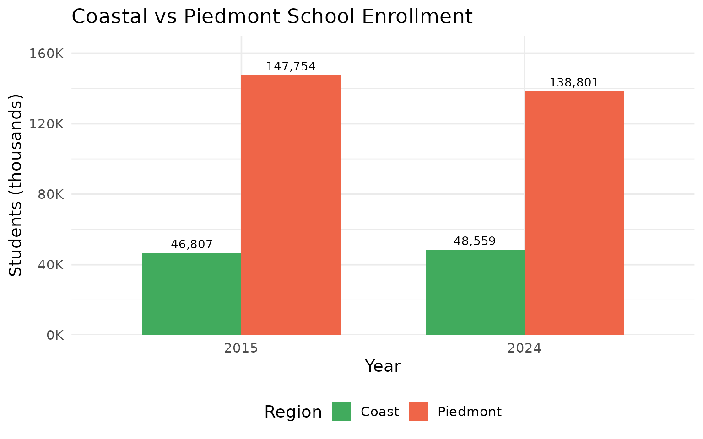
7. Economically disadvantaged students are half of enrollment
Poverty defines North Carolina schools.
econ_data <- enr_2024 %>%
filter(is_state, grade_level == "TOTAL",
subgroup %in% c("total_enrollment", "econ_disadv")) %>%
select(subgroup, n_students) %>%
mutate(pct = round(n_students / max(n_students) * 100, 1))
stopifnot(nrow(econ_data) > 0)
econ_data
#> # A tibble: 2 × 3
#> subgroup n_students pct
#> <chr> <dbl> <dbl>
#> 1 total_enrollment 1508194 100
#> 2 econ_disadv 757944 50.3
ggplot(econ_data, aes(x = reorder(subgroup, -n_students), y = n_students / 1000, fill = subgroup)) +
geom_col(width = 0.6) +
geom_text(aes(label = paste0(scales::comma(n_students), "\n(", pct, "%)")), vjust = -0.3, size = 4) +
scale_fill_manual(
values = c("total_enrollment" = "#2171B5", "econ_disadv" = "#CB181D"),
guide = "none"
) +
scale_x_discrete(labels = c("total_enrollment" = "All Students", "econ_disadv" = "Econ. Disadvantaged")) +
scale_y_continuous(
labels = scales::label_number(suffix = "K"),
expand = expansion(mult = c(0, 0.2))
) +
labs(
title = "Half of NC Students Are Economically Disadvantaged (2024)",
x = NULL,
y = "Students (thousands)"
)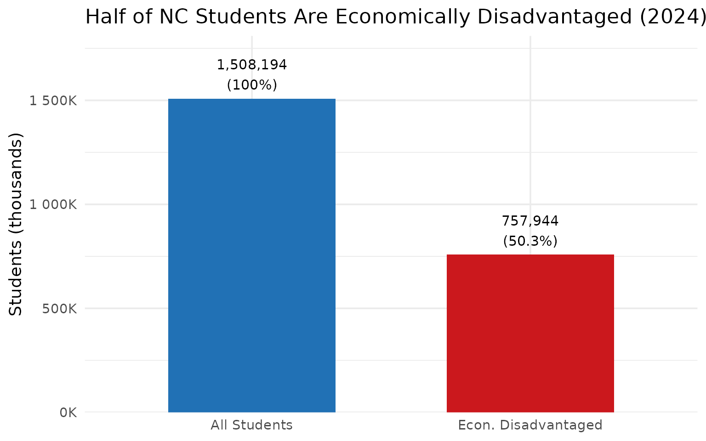
8. Durham demographics are shifting rapidly
The Triangle’s most diverse district is transforming.
durham_demographics <- enr_demo %>%
filter(is_district, district_id == "320", grade_level == "TOTAL",
subgroup %in% c("white", "black", "hispanic", "asian")) %>%
group_by(end_year) %>%
mutate(
total = sum(n_students),
pct = round(n_students / total * 100, 1)
) %>%
ungroup() %>%
select(end_year, subgroup, n_students, pct)
stopifnot(nrow(durham_demographics) > 0)
durham_demographics
#> # A tibble: 20 × 4
#> end_year subgroup n_students pct
#> <dbl> <chr> <dbl> <dbl>
#> 1 2018 asian 753 2.3
#> 2 2018 black 14976 46.3
#> 3 2018 hispanic 10295 31.8
#> 4 2018 white 6314 19.5
#> 5 2019 asian 741 2.3
#> 6 2019 black 14451 45.4
#> 7 2019 hispanic 10299 32.4
#> 8 2019 white 6332 19.9
#> 9 2020 asian 691 2.2
#> 10 2020 black 13924 43.6
#> 11 2020 hispanic 10943 34.3
#> 12 2020 white 6345 19.9
#> 13 2021 asian 659 2.2
#> 14 2021 black 12962 42.9
#> 15 2021 hispanic 10482 34.7
#> 16 2021 white 6083 20.2
#> 17 2024 asian 701 2.4
#> 18 2024 black 11339 39.2
#> 19 2024 hispanic 11090 38.4
#> 20 2024 white 5770 20
durham_demographics %>%
mutate(subgroup = factor(subgroup,
levels = c("white", "black", "hispanic", "asian"),
labels = c("White", "Black", "Hispanic", "Asian"))) %>%
ggplot(aes(x = end_year, y = pct, fill = subgroup)) +
geom_area(alpha = 0.7) +
geom_vline(xintercept = 2020.5, linetype = "dashed", color = "white", alpha = 0.7) +
scale_fill_manual(values = c(
"White" = "#4292C6",
"Black" = "#807DBA",
"Hispanic" = "#41AB5D",
"Asian" = "#EF6548"
)) +
scale_y_continuous(labels = scales::label_percent(scale = 1)) +
labs(
title = "Durham Public Schools: Demographic Transformation",
x = "Year",
y = "Share of Enrollment",
fill = "Race/Ethnicity"
) +
theme(legend.position = "bottom")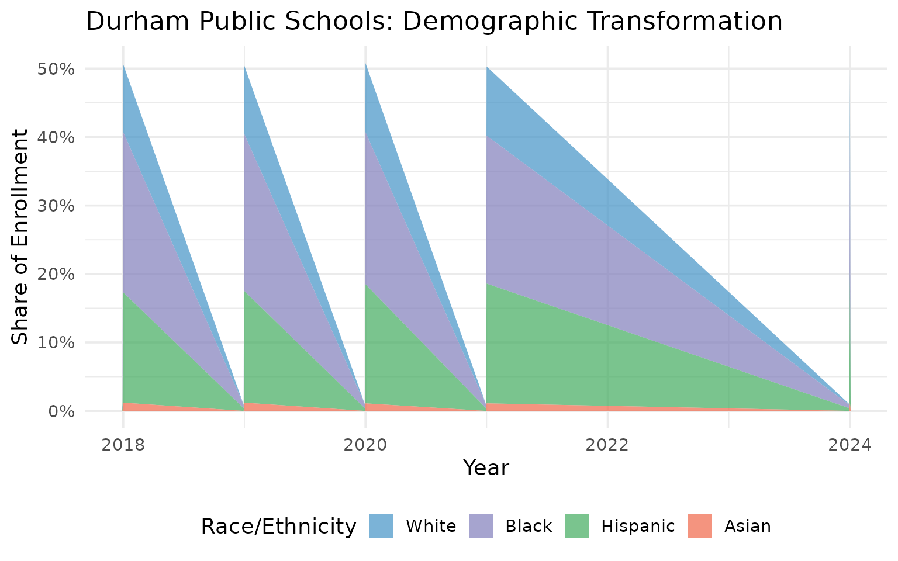
9. English Learners grew 42% from 2018 to 2024
NC schools are adapting to a multilingual reality, adding nearly 50,000 EL students in six years.
el_trend <- enr_demo %>%
filter(is_state, grade_level == "TOTAL", subgroup == "lep") %>%
select(end_year, n_students) %>%
mutate(pct_change = round((n_students / first(n_students) - 1) * 100, 1))
stopifnot(nrow(el_trend) > 0)
el_trend
#> # A tibble: 5 × 3
#> end_year n_students pct_change
#> <dbl> <dbl> <dbl>
#> 1 2018 118569 0
#> 2 2019 127843 7.8
#> 3 2020 126240 6.5
#> 4 2021 131322 10.8
#> 5 2024 168383 42
ggplot(el_trend, aes(x = end_year, y = n_students / 1000)) +
geom_area(fill = "#41AB5D", alpha = 0.3) +
geom_line(color = "#41AB5D", linewidth = 1.2) +
geom_point(color = "#41AB5D", size = 3) +
geom_vline(xintercept = 2020.5, linetype = "dashed", color = "gray50", alpha = 0.7) +
annotate("text", x = 2020.5, y = 185, label = "COVID", color = "gray50", hjust = -0.2, size = 3.5) +
geom_text(aes(label = scales::comma(n_students)), vjust = -1, size = 3.5) +
scale_y_continuous(
labels = scales::label_number(suffix = "K"),
limits = c(0, 200)
) +
labs(
title = "English Learners in North Carolina Schools",
x = "Year",
y = "English Learners (thousands)"
)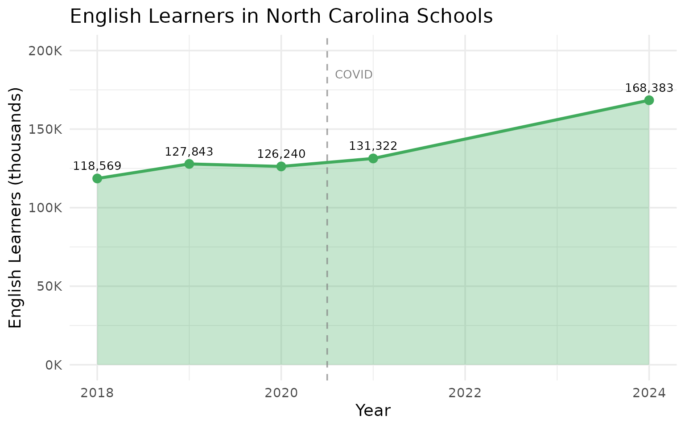
10. Rural eastern NC is losing students fast
Tobacco country is emptying out while cities grow.
enr_multi <- fetch_enr_multi(c(2015, 2024), use_cache = TRUE)
# Eastern rural counties (traditional tobacco belt)
eastern_rural <- c("Edgecombe", "Halifax", "Hertford", "Northampton",
"Bertie", "Martin", "Washington", "Tyrrell")
eastern_data <- enr_multi %>%
filter(is_district, subgroup == "total_enrollment", grade_level == "TOTAL") %>%
mutate(is_eastern = grepl(paste(eastern_rural, collapse = "|"), district_name)) %>%
filter(is_eastern) %>%
group_by(end_year) %>%
summarize(total = sum(n_students, na.rm = TRUE), .groups = "drop") %>%
mutate(pct_change = round((total / first(total) - 1) * 100, 1))
stopifnot(nrow(eastern_data) > 0)
eastern_data
#> # A tibble: 2 × 3
#> end_year total pct_change
#> <dbl> <dbl> <dbl>
#> 1 2015 21596 0
#> 2 2024 16219 -24.9
ggplot(eastern_data, aes(x = factor(end_year), y = total / 1000)) +
geom_col(fill = "#8B4513", width = 0.6) +
geom_text(aes(label = scales::comma(total)), vjust = -0.5, size = 4) +
scale_y_continuous(
labels = scales::label_number(suffix = "K"),
expand = expansion(mult = c(0, 0.15))
) +
labs(
title = "Eastern NC Rural Counties: Enrollment Decline",
x = "Year",
y = "Students (thousands)"
)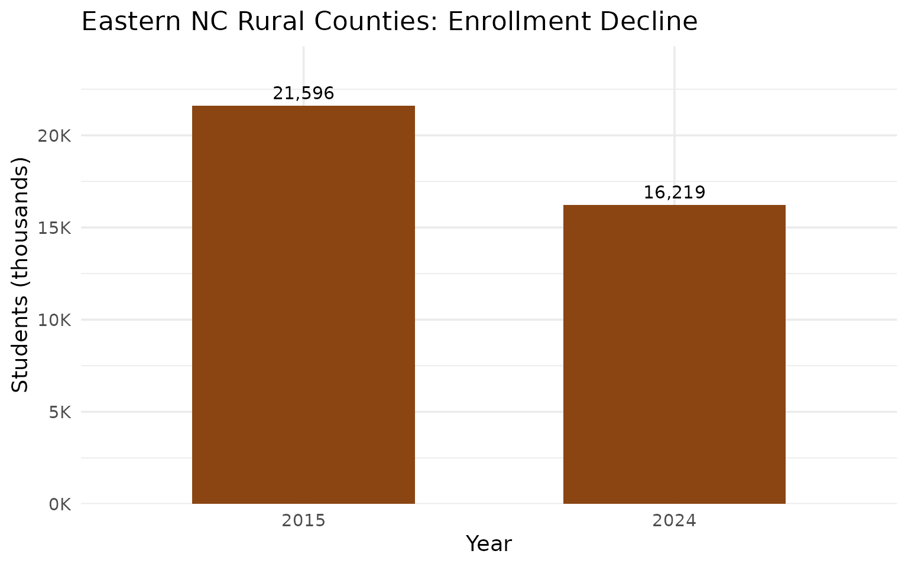
11. Union County added 10,000 students then plateaued
Charlotte’s southern suburbs surged from 31,000 to 41,000 (2006-2015), then leveled off.
enr_union <- fetch_enr_multi(c(2006, 2010, 2015, 2020, 2024), use_cache = TRUE)
union_trend <- enr_union %>%
filter(is_district, subgroup == "total_enrollment", grade_level == "TOTAL",
grepl("Union", district_name)) %>%
select(end_year, district_name, n_students)
stopifnot(nrow(union_trend) > 0)
union_trend
#> # A tibble: 5 × 3
#> end_year district_name n_students
#> <dbl> <chr> <dbl>
#> 1 2006 Union County Public Schools 31330
#> 2 2010 Union County Public Schools 38282
#> 3 2015 Union County Public Schools 41296
#> 4 2020 Union County Public Schools 41452
#> 5 2024 Union County Public Schools 41378
ggplot(union_trend, aes(x = end_year, y = n_students / 1000)) +
geom_area(fill = "#2171B5", alpha = 0.3) +
geom_line(color = "#2171B5", linewidth = 1.2) +
geom_point(color = "#2171B5", size = 3) +
geom_text(aes(label = scales::comma(n_students)), vjust = -1, size = 3.5) +
scale_y_continuous(
labels = scales::label_number(suffix = "K"),
limits = c(0, 50)
) +
labs(
title = "Union County Schools: Charlotte's Growth Engine",
x = "Year",
y = "Students (thousands)"
)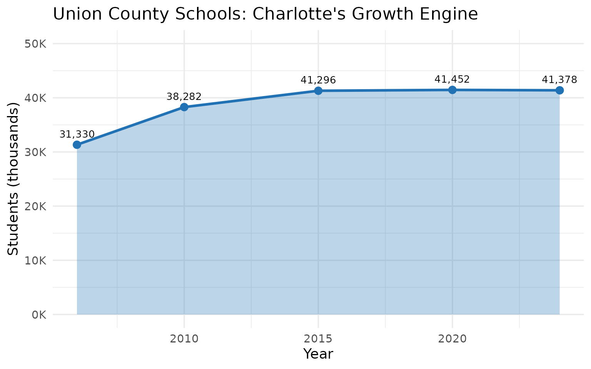
12. Asheville’s mountain districts saw enrollment decline
Western NC has an aging population and shrinking schools.
enr_mountain <- fetch_enr_multi(c(2015, 2024), use_cache = TRUE)
# Mountain counties around Asheville
mountain <- c("Buncombe", "Henderson", "Haywood", "Madison",
"Transylvania", "Yancey", "Mitchell")
mountain_data <- enr_mountain %>%
filter(is_district, subgroup == "total_enrollment", grade_level == "TOTAL") %>%
mutate(is_mountain = grepl(paste(mountain, collapse = "|"), district_name)) %>%
filter(is_mountain) %>%
group_by(end_year) %>%
summarize(
total = sum(n_students, na.rm = TRUE),
n_districts = n(),
.groups = "drop"
)
stopifnot(nrow(mountain_data) > 0)
mountain_data
#> # A tibble: 2 × 3
#> end_year total n_districts
#> <dbl> <dbl> <int>
#> 1 2015 55623 7
#> 2 2024 49817 7
ggplot(mountain_data, aes(x = factor(end_year), y = total / 1000)) +
geom_col(fill = "#4A7C59", width = 0.6) +
geom_text(aes(label = scales::comma(total)), vjust = -0.5, size = 4) +
scale_y_continuous(
labels = scales::label_number(suffix = "K"),
expand = expansion(mult = c(0, 0.15))
) +
labs(
title = "Western NC Mountain Counties: Enrollment Trends",
x = "Year",
y = "Students (thousands)"
)
13. Special education share held steady at 13-14% since 2018
Despite a 3% headcount decline, special education’s share of total enrollment barely moved.
enr_sped <- fetch_enr_multi(c(2018, 2019, 2021, 2024), use_cache = TRUE)
sped_trend <- enr_sped %>%
filter(is_state, grade_level == "TOTAL",
subgroup %in% c("total_enrollment", "special_ed")) %>%
select(end_year, subgroup, n_students) %>%
pivot_wider(names_from = subgroup, values_from = n_students) %>%
mutate(
pct_sped = round(special_ed / total_enrollment * 100, 1),
sped_change = round((special_ed / first(special_ed) - 1) * 100, 1)
)
stopifnot(nrow(sped_trend) > 0)
sped_trend
#> # A tibble: 4 × 5
#> end_year total_enrollment special_ed pct_sped sped_change
#> <dbl> <dbl> <dbl> <dbl> <dbl>
#> 1 2018 1521108 208352 13.7 0
#> 2 2019 1535687 211629 13.8 1.6
#> 3 2021 1469401 204434 13.9 -1.9
#> 4 2024 1508194 202380 13.4 -2.9
ggplot(sped_trend, aes(x = end_year)) +
geom_col(aes(y = special_ed / 1000), fill = "#6A51A3", width = 2) +
geom_text(aes(y = special_ed / 1000, label = paste0(pct_sped, "%")),
vjust = -0.5, size = 4) +
scale_y_continuous(
labels = scales::label_number(suffix = "K"),
expand = expansion(mult = c(0, 0.15))
) +
labs(
title = "Special Education Students in NC",
x = "Year",
y = "Students with IEPs (thousands)"
)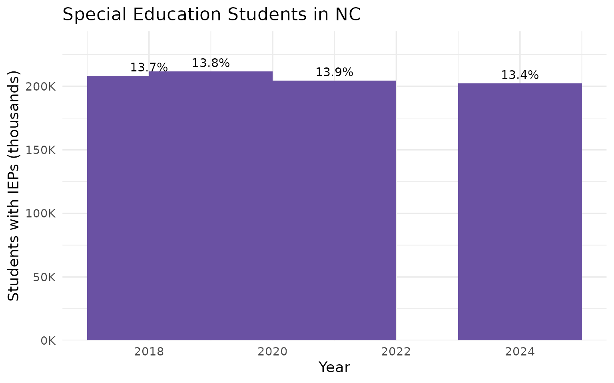
14. The Triangle vs Triad: diverging trajectories
Raleigh-Durham grows while Greensboro-Winston stalls.
enr_metro <- fetch_enr_multi(c(2015, 2020, 2024), use_cache = TRUE)
triangle <- c("Wake", "Durham", "Orange", "Johnston", "Chatham")
triad <- c("Guilford", "Forsyth", "Davidson", "Randolph", "Alamance")
metro_data <- enr_metro %>%
filter(is_district, subgroup == "total_enrollment", grade_level == "TOTAL") %>%
mutate(region = case_when(
grepl(paste(triangle, collapse = "|"), district_name) ~ "Triangle",
grepl(paste(triad, collapse = "|"), district_name) ~ "Triad",
TRUE ~ "Other"
)) %>%
filter(region %in% c("Triangle", "Triad")) %>%
group_by(end_year, region) %>%
summarize(total = sum(n_students, na.rm = TRUE), .groups = "drop")
stopifnot(nrow(metro_data) > 0)
metro_data
#> # A tibble: 6 × 3
#> end_year region total
#> <dbl> <chr> <dbl>
#> 1 2015 Triad 184979
#> 2 2015 Triangle 236723
#> 3 2020 Triad 181208
#> 4 2020 Triangle 246320
#> 5 2024 Triad 171352
#> 6 2024 Triangle 243012
ggplot(metro_data, aes(x = end_year, y = total / 1000, color = region)) +
geom_line(linewidth = 1.2) +
geom_point(size = 3) +
geom_text(aes(label = scales::comma(total)), vjust = -1, size = 3.5, show.legend = FALSE) +
scale_color_manual(values = c("Triangle" = "#2171B5", "Triad" = "#CB181D")) +
scale_y_continuous(labels = scales::label_number(suffix = "K")) +
labs(
title = "Triangle vs Triad: Diverging Metro Areas",
x = "Year",
y = "Students (thousands)",
color = "Metro Area"
) +
theme(legend.position = "bottom")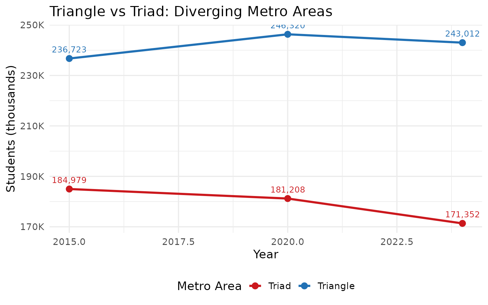
15. COVID erased 56,000 students in a single year
The 2020-2021 school year saw the sharpest enrollment drop in NC history, followed by a partial recovery.
covid_trend <- enr_demo %>%
filter(is_state, subgroup == "total_enrollment", grade_level == "TOTAL") %>%
select(end_year, n_students) %>%
mutate(change = n_students - lag(n_students))
stopifnot(nrow(covid_trend) > 0)
covid_trend
#> # A tibble: 5 × 3
#> end_year n_students change
#> <dbl> <dbl> <dbl>
#> 1 2018 1521108 NA
#> 2 2019 1535687 14579
#> 3 2020 1525592 -10095
#> 4 2021 1469401 -56191
#> 5 2024 1508194 38793
ggplot(covid_trend, aes(x = end_year, y = n_students / 1e6)) +
geom_line(color = "#2171B5", linewidth = 1.2) +
geom_point(aes(color = ifelse(end_year == 2021, "COVID", "Normal")), size = 4) +
geom_vline(xintercept = 2020.5, linetype = "dashed", color = "gray50", alpha = 0.7) +
annotate("text", x = 2020.5, y = 1.55, label = "COVID", color = "gray50", hjust = -0.2, size = 3.5) +
geom_text(aes(label = scales::comma(n_students)), vjust = -1, size = 3.5) +
scale_color_manual(values = c("COVID" = "#CB181D", "Normal" = "#2171B5"), guide = "none") +
scale_y_continuous(
labels = scales::label_number(suffix = "M"),
limits = c(1.35, 1.6)
) +
labs(
title = "NC Enrollment: COVID Drop and Partial Recovery",
x = "Year",
y = "Total Students"
)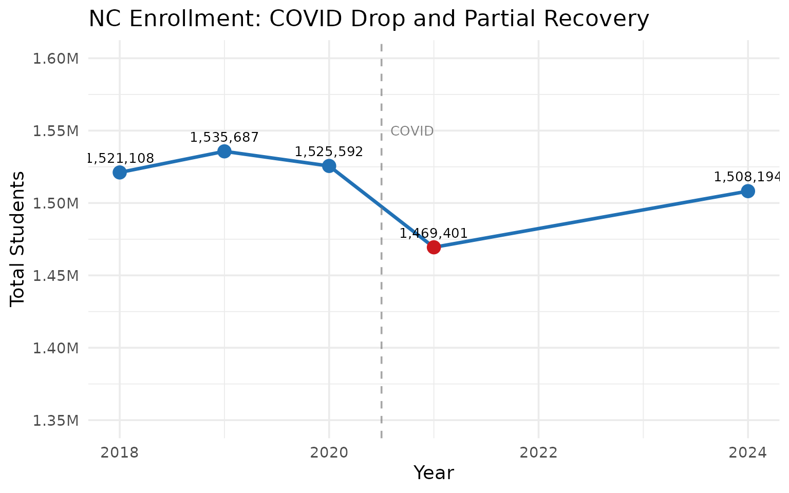
Explore the data yourself
library(ncschooldata)
# Fetch recent years
enr <- fetch_enr_multi(2019:2024, use_cache = TRUE)
# State totals
enr %>%
filter(is_state, subgroup == "total_enrollment", grade_level == "TOTAL")
# Your district
enr %>%
filter(grepl("Wake", district_name),
subgroup == "total_enrollment",
grade_level == "TOTAL")
sessionInfo()
#> R version 4.5.2 (2025-10-31)
#> Platform: x86_64-pc-linux-gnu
#> Running under: Ubuntu 24.04.3 LTS
#>
#> Matrix products: default
#> BLAS: /usr/lib/x86_64-linux-gnu/openblas-pthread/libblas.so.3
#> LAPACK: /usr/lib/x86_64-linux-gnu/openblas-pthread/libopenblasp-r0.3.26.so; LAPACK version 3.12.0
#>
#> locale:
#> [1] LC_CTYPE=C.UTF-8 LC_NUMERIC=C LC_TIME=C.UTF-8
#> [4] LC_COLLATE=C.UTF-8 LC_MONETARY=C.UTF-8 LC_MESSAGES=C.UTF-8
#> [7] LC_PAPER=C.UTF-8 LC_NAME=C LC_ADDRESS=C
#> [10] LC_TELEPHONE=C LC_MEASUREMENT=C.UTF-8 LC_IDENTIFICATION=C
#>
#> time zone: UTC
#> tzcode source: system (glibc)
#>
#> attached base packages:
#> [1] stats graphics grDevices utils datasets methods base
#>
#> other attached packages:
#> [1] ggplot2_4.0.2 tidyr_1.3.2 dplyr_1.2.0 ncschooldata_0.1.0
#> [5] testthat_3.3.2
#>
#> loaded via a namespace (and not attached):
#> [1] gtable_0.3.6 jsonlite_2.0.0 compiler_4.5.2 brio_1.1.5
#> [5] tidyselect_1.2.1 jquerylib_0.1.4 systemfonts_1.3.1 scales_1.4.0
#> [9] textshaping_1.0.4 yaml_2.3.12 fastmap_1.2.0 R6_2.6.1
#> [13] labeling_0.4.3 generics_0.1.4 curl_7.0.0 knitr_1.51
#> [17] tibble_3.3.1 desc_1.4.3 bslib_0.10.0 pillar_1.11.1
#> [21] RColorBrewer_1.1-3 rlang_1.1.7 utf8_1.2.6 cachem_1.1.0
#> [25] xfun_0.56 S7_0.2.1 fs_1.6.6 sass_0.4.10
#> [29] cli_3.6.5 withr_3.0.2 pkgdown_2.2.0 magrittr_2.0.4
#> [33] digest_0.6.39 grid_4.5.2 rappdirs_0.3.4 lifecycle_1.0.5
#> [37] vctrs_0.7.1 evaluate_1.0.5 glue_1.8.0 farver_2.1.2
#> [41] codetools_0.2-20 ragg_1.5.0 httr_1.4.8 rmarkdown_2.30
#> [45] purrr_1.2.1 tools_4.5.2 pkgconfig_2.0.3 htmltools_0.5.9